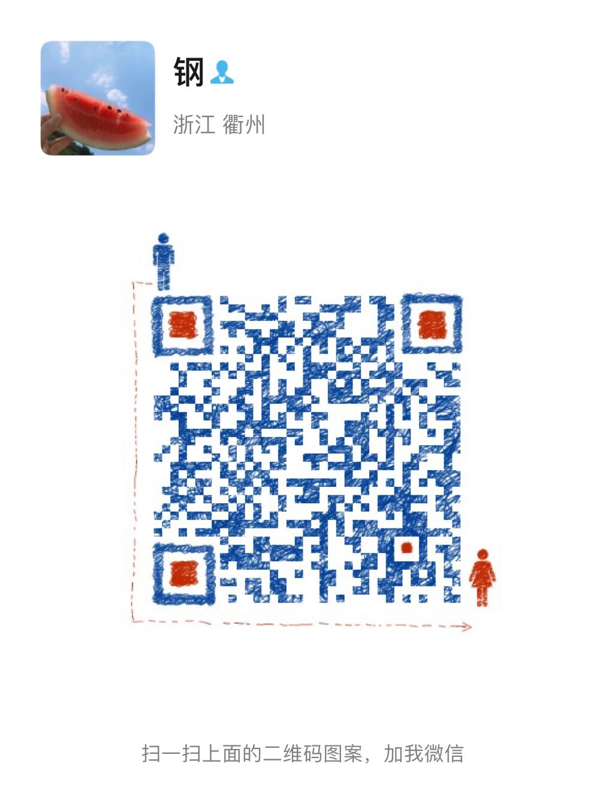

赖尹钢
前端工程师
基本信息
- 赖尹钢 / 男 / 24岁
- CET-4
- 三级网络技术
联系方式
微信二维码

教育经历
专业技能
- 熟练HTML、CSS、JavaScript。熟悉ES6+规范。
- 熟练前端框架Vue.js、uni-app等。
- 熟悉前端性能优化、跨浏览器兼容处理等技术。
- 熟练使用前端构建工具、版本控制工具和调试工具。
- 熟悉Node.js，使用koa框架，配合ORM工具Sequlize操作MySQL数据库，进行服务端接口开发。
- 了解Java，会使用Spring+SpringMVC+MyBatis进行简单服务端接口开发。
- 了解Linux系统基本操作命令。了解nginx配置，部署前端项目，配置代理转发。
工作经历
-
武汉超星数图教育科技有限公司－Web前端开发工程师
- 参与学习通生态相关产品前端部分的开发与维护
- 参与超星综合教学管理系统的开发与维护。
-
九江威斯特信息技术有限公司－Web前端开发（实习）
- 负责中后台管理系统前端部分的开发与维护
- 使用uni-app开发移动端应用程序、微信小程序、H5网站等。
项目经验
-
超星综合教学管理系统
- 技术栈：Vite + Vue + TypeScript + Pinia + Vue Router + UnoCSS + Element Plus + Vxe Table + Vue I18n + ECharts + Axios等
-
负责学籍管理、师资管理、基础数据、考务管理、培养过程、德智体美劳、毕业管理、毕业论文、审批流、工作量管理等模块开发与维护。
参与封装如多选下拉框、输入框、标签页、上传组件等等适配业务的教务组件库开发。
-
知识挑战
- 技术栈：webpack + Vue + Vuex + Vue Router + Vant + Vue I18n + WebSocket + Axios等
-
项目需要支持多套定制的节日样式主题换肤，对前端部分使用新框架重构，便于后续维护。
负责将项目的前端部分由JSP + jQuery迁移到vue框架，重写页面与样式。将定制的样式抽离为使用css变量，通过和ui设计师沟通结合Design Token输出每套主题样式相关的token.json。使用style-dictionary解析json文件，生成对应的css变量来实现多套主题的换肤。
使用WebSocket实现双人联机对战答题。
-
知视频
- 技术栈：jQuery + Vue + Axios等
-
负责活动管理模块开发，使用vue-cropper插件对活动宣传图进行裁剪操作。
对移动端页面优化适配刘海屏、灵动岛。
-
小组统计后台
- 技术栈：Vite + Vue + Vue Router + Element Plus + ECharts + Axios等
-
负责小组热度统计、小组详情、小组推荐等页面的开发。
-
学习通小组
- 技术栈：JSP + jQuery + Vue + Vant + VueI18n等
-
参与H5端小组，小组列表、小组管理、小组内容详情、小组评论等相关页面的开发与维护。
参与小组项目的国际化、镜像化改造。
-
五柳安智
- 技术栈：uni-app + uni-ui + color-ui + uview-ui + vuex等
-
负责对接安全帽低功耗蓝牙(BLE)配件实现数据交互，轮询设备佩戴状态，实现工作状态监管。定时上报设备定位以及日志。
管理后台使用vue-element-admin框架进行快速开发。
自我评价
- 工作积极认真，细心负责，编写代码注重格式规范，拥有良好的团队协作精神。
- 热爱前端技术，喜欢学习行业所需的新技术、学习动手能力强。
- 个人博客地址：博客文章